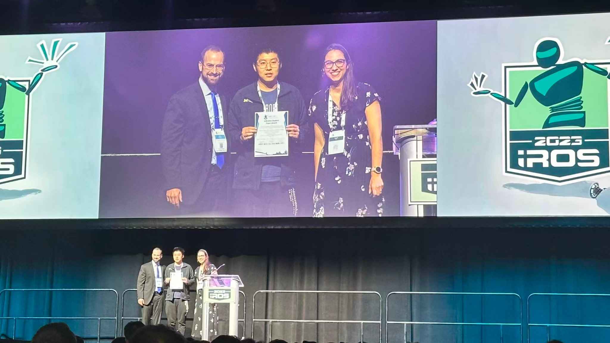

跨活动的双腿连续转换控制（TNSRE 2024）
IROS 2023 最佳学生论文
科研


本工作实现了动力膝–踝假肢在平地行走与上下楼梯之间的 连续、类生物过渡控制， 无需依赖离散模式切换。 该方法覆盖了 全部八种双腿转换情形 （上/下楼梯、进入/离开楼梯、健侧主导/假肢侧主导）， 这是实现自然、真实环境移动能力的关键。
奖项： 该工作荣获 2023 IEEE/RSJ IROS 最佳学生论文奖。
本人贡献
- 连续变化转换（CVT）轨迹模型： 提出一种在整个步态周期内连续变化的关节轨迹模型， 在活动转换过程中平滑调整运动学参数， 显著降低不连续性与“控制器突变”。
- 最优切换转换（OST）基线方法： 构建在最优步态相位进行离散模型切换的对比方法， 作为评估 CVT 性能的强基线。
- 相位变量控制框架： 基于相位变量实时执行上述模型， 实现膝关节与踝关节的连续、相位对齐轨迹生成。
- 延迟鲁棒性分析： 系统性分析连续参数化在意图识别存在延迟或误判时的优势， 解释了传统模式切换系统在真实应用中的主要失效机理。
研究意义
- 消除对切换时机的高度依赖： 传统切换式控制器依赖“完美”的转换时刻， CVT 显著降低了对时序误差的敏感性。
- 显式建模双腿差异： 由健侧或假肢侧主导的转换在生物力学上存在显著差异， 该框架能够系统性地处理这些差别。
- 实验验证： 在股骨假肢使用者实验中， 于两种不同楼梯/台阶高度条件下， 成功验证了全部八种转换情形的无缝过渡。
技术要点
相位变量控制
轨迹生成
人体实验
生物力学建模
鲁棒性分析（延迟 / 误分类）
对比基线（OST vs CVT）